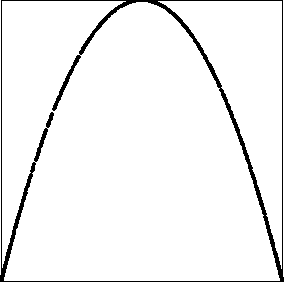

To check the apparent synchronization suggested by the driven IFS, here we plot the return maps for the average of two logistic maps.
Recall the return map for a single logistic map is just the
graph of the function
So when the return map of the average of two coupled maps is the graph of a logistic function, we have good evidence the functions have synchronized.
Note each is chaotic, exhibiting sensitivity to initial conditions, and we did
not start them at the same x-value. Nevertheless, they synchronize in a range
between about
|
 |
Return to Synchronization of Chaotic Processes.